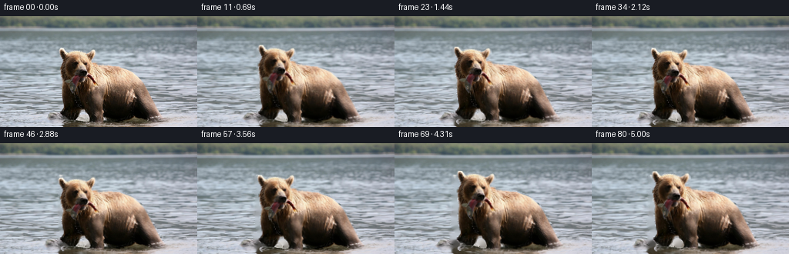
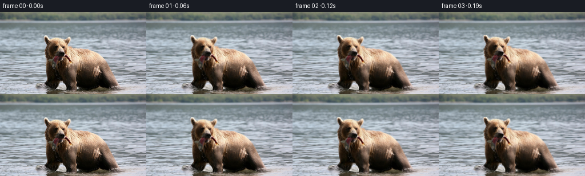

CODING AGENTS AS PIXEL WORLD MODELS
traex/GPT-6.1-Sol · 0872_s1
点击播放 · 原生 RGB 像素
逐轮保存的候选
回放视频、检查图与代码变化。
每份候选均可单独播放。实际图片检查记录在下方工具轨迹中。
候选 01播放与检查图
点击播放 · 原生 RGB 像素

展开代码变化
--- 上一保存版本
+++ 本次保存版本
@@ -0,0 +1,210 @@
+"""An image-only, deterministic animation of the supplied bear photograph.
+
+All textures are pixels from first_frame.png. The motion is a hand-authored
+continuous deformation, with separately coupled head, jaw, fish and feet, and
+an advected river background. No models or external assets are used.
+"""
+from pathlib import Path
+import math
+import numpy as np
+from PIL import Image, ImageDraw
+import cv2
+import artifact_io
+
+ROOT = Path(__file__).resolve().parent
+W, H, N, FPS = 256, 144, 81, 16
+YY, XX = np.mgrid[:H, :W].astype(np.float32)
+
+
+def smoothstep(a, b, x):
+ q = np.clip((x-a)/(b-a), 0, 1)
+ return q*q*(3-2*q)
+
+
+def sample(a, x, y):
+ return cv2.remap(a, x.astype(np.float32), y.astype(np.float32),
+ cv2.INTER_LINEAR, borderMode=cv2.BORDER_REFLECT_101)
+
+
+def make_mask():
+ # Measured using RGB values: the illuminated fur is warm, the river cool.
+ # The outline includes the two ears, shoulders, legs, and their waterline.
+ outline = [
+ (77,43),(81,43),(84,45),(85,48),(89,47),(93,45),
+ (104,45),(110,47),(113,49),(116,46),(119,44),(122,44),
+ (124,46),(124,50),(122,54),(120,57),(120,59),
+ (125,61),(130,63),(144,63),(153,65),(159,67),
+ (165,69),(170,72),(174,75),(179,79),(182,82),
+ (185,86),(188,90),(190,94),(193,100),(196,105),
+ (199,110),(201,114),(203,118),(205,122),(208,126),
+ (210,130),(211,132),(205,134),(198,136),(192,137),
+ (172,140),(150,141),(136,142),(120,141),(112,141),
+ (105,141),(97,141),(88,140),(82,139),(80,137),
+ (84,134),(87,132),(84,130),(81,128),(79,126),
+ (79,123),(82,120),(83,116),(82,111),(81,106),
+ (80,100),(80,95),(81,90),(81,85),(81,81),
+ (79,79),(79,74),(79,70),(78,67),(79,64),
+ (81,61),(82,58),(81,55),(80,53),(79,51),(78,48)
+ ]
+ im = Image.new('L', (W,H), 0)
+ d = ImageDraw.Draw(im)
+ d.polygon(outline, fill=255)
+ # The visible patch of river between the two front legs.
+ d.polygon([(106,122),(111,123),(113,126),(115,129),(117,132),
+ (117,135),(113,137),(107,136),(100,136),(98,134),
+ (101,131),(102,127),(104,124)], fill=0)
+ mask = np.asarray(im).astype(np.float32)/255
+ # A pixel of context preserves all fine backlit fur fringes.
+ return cv2.dilate(mask, np.ones((3,3),np.uint8), iterations=1)
+
+
+def motion(x, y, t):
+ # A short, slow wade, with weight shifting between the forelegs.
+ s = t / 5.0
+ advance = 2.9 * smoothstep(0.0, 1.0, s)
+ scale = 1.0 + .022 * smoothstep(0.0, 1.0, s)
+ breath = .0025 * np.sin(2*np.pi*t*.48)
+ weightshift = 1.25*np.sin(2*np.pi*t*.29)
+ bob = .60*np.sin(2*np.pi*t*.59)
+ dx = advance + weightshift + (scale-1+breath)*(x-137)
+ dy = bob - .45*s + (scale-1)*(y-136)
+
+ # The bear gently raises its muzzle, looks to its left, then settles.
+ # Rotation fades into the neck rather than tearing at a layer boundary.
+ hw = (1-smoothstep(78,104,y))*(1-smoothstep(120,148,x))
+ theta = .047*np.sin(2*np.pi*t*.26) + .025*np.sin(2*np.pi*t*.53)
+ hx, hy = x-115, y-88
+ rdx = (np.cos(theta)-1)*hx - np.sin(theta)*hy
+ rdy = np.sin(theta)*hx + (np.cos(theta)-1)*hy
+ lift = -2.35*np.sin(2*np.pi*t*.27) - .80*np.sin(2*np.pi*t*.60)
+ look = -1.4*np.sin(2*np.pi*t*.24)
+ dx += hw*(rdx+look)
+ dy += hw*(rdy+lift)
+
+ # The silver fish hangs down from the mouth. Its free end flexes and
+ # swings while the jaw remains attached at the same point in the snout.
+ fish = np.exp(-((x-94.3)/5.2)**4) * smoothstep(80,85,y) * (1-smoothstep(101,106,y))
+ fishlen = np.clip((y-81)/21,0,1)
+ swing = 2.0*np.sin(2*np.pi*t*.77) + .65*np.sin(2*np.pi*t*1.37)
+ dx += fish * fishlen**1.3 * swing
+ dy += fish * .42*fishlen*np.sin(2*np.pi*t*.91)
+
+ # Minute chewing movement of the lower muzzle, still gripping the fish.
+ jaw = np.exp(-((x-106)/12)**2-((y-84)/5)**2)
+ dy += jaw*.42*(1-np.cos(2*np.pi*t*1.04))
+
+ # The two forelegs move with alternating support; the torso stays solid.
+ feet = smoothstep(106,132,y)
+ leg1 = np.exp(-((x-93)/12)**4)*feet
+ leg2 = np.exp(-((x-125)/11)**4)*feet
+ phase = 2*np.pi*t*.54
+ dx += .82*leg1*np.sin(phase) - .65*leg2*np.sin(phase)
+ dy += -1.85*leg1*np.maximum(np.sin(phase),0)**2
+ dy += -1.60*leg2*np.maximum(-np.sin(phase),0)**2
+ return dx, dy
+
+
+def river_map(t):
+ depth = smoothstep(17,137,YY)
+ current = 1.55*t*(.25+.75*depth)
+ # Horizontal streaks of fast water move independently of the bear.
+ phase1 = .195*YY + .039*XX
+ phase2 = .44*YY - .064*XX
+ wx = current + depth*(1.12*(np.sin(phase1-1.75*t)-np.sin(phase1))
+ + .48*(np.sin(phase2-2.40*t)-np.sin(phase2)))
+ wy = depth*(.39*(np.sin(.103*XX+.30*YY-1.9*t)-np.sin(.103*XX+.30*YY))
+ + .18*(np.sin(.25*XX-.15*YY+2.3*t)-np.sin(.25*XX-.15*YY)))
+ on = smoothstep(16,30,YY)
+ return XX+wx*on, YY+wy*on
+
+
+def splash_and_wake(frame, alpha, t):
+ # Broken low-contrast foam/ripples at the moving feet. Computed at pixel
+ # resolution and weighted against the silhouette, not solid drawn rings.
+ gain = smoothstep(0,.40,t)
+ if gain == 0:
+ return frame
+ foam = np.zeros((H,W),np.float32)
+ dxbase = 2.9*smoothstep(0,1,t/5)+1.25*np.sin(2*np.pi*t*.29)
+ for cx,cy,p in [(93,136,0),(125,137,.60),(192,133,1.1)]:
+ cx += dxbase
+ for k in range(3):
+ age = (t*.79+p+k*.33)%1
+ rx = 5+20*age
+ ry = 1.0+2.3*age
+ radial = np.sqrt(((XX-cx)/rx)**2+((YY-cy)/ry)**2)
+ ring = np.exp(-((radial-1)/.095)**2)
+ fragment = np.clip(.55+.6*np.sin(XX*.73+YY*1.7+4*p),0,1)
+ foam += ring*fragment*(1-age)*.12
+ # Small splashes at each planted forepaw; deterministic ballistic droplets.
+ rng = np.random.default_rng(351)
+ for launch,cx,cy in [(0.64,92,134),(1.61,125,135),
+ (2.53,93,134),(3.49,126,135),(4.46,95,134)]:
+ for j in range(11):
+ delay = rng.uniform(0,.14)
+ vx = rng.uniform(-14,14)
+ vy = rng.uniform(-21,-8)
+ life = rng.uniform(.25,.53)
+ radius = rng.uniform(.30,.66)
+ age=t-launch-delay
+ if 0<age<life:
+ px=cx+dxbase+vx*age
+ py=cy+vy*age+28*age*age
+ blob=np.exp(-((XX-px)/radius)**2-((YY-py)/(radius*1.45))**2)
+ foam += blob*.31*np.sin(np.pi*age/life)
+ visible = 1-.88*alpha
+ # At the waterline a little foam can pass in front of the wet feet.
+ visible = np.maximum(visible, .72*smoothstep(129,140,YY))
+ foam = np.clip(foam*gain*visible,0,.34)[...,None]
+ color = np.array([213,220,225],np.float32)
+ frame = frame*(1-foam)+color*foam
+ return frame
+
+
+def generate():
+ original=np.asarray(Image.open(ROOT/'first_frame.png').convert('RGB'))
+ assert original.shape == (H,W,3)
+ image=original.astype(np.float32)
+ mask=make_mask()
+ # Pixel inpainting is only needed for narrow strips revealed by movement.
+ # Deeply occluded regions are never displayed.
+ plate=cv2.inpaint(original,(mask*255).astype(np.uint8),3,cv2.INPAINT_TELEA).astype(np.float32)
+ premult=image*mask[...,None]
+ frames=[original.copy()]
+ for i in range(1,N):
+ t=i/FPS
+ bx,by=river_map(t)
+ background=sample(plate,bx,by)
+ # Iterative inverse of the analytic source-coordinate deformation.
+ sx=XX.copy(); sy=YY.copy()
+ for _ in range(5):
+ dx,dy=motion(sx,sy,t)
+ sx=XX-dx; sy=YY-dy
+ alpha=sample(mask,sx,sy)
+ subject=sample(premult,sx,sy)
+ frame=background*(1-alpha[...,None])+subject
+ # Surface currents wash across the feet/reflection, making a natural
+ # soft transition from fur to the flowing river at the bottom.
+ waterline=smoothstep(135,144,YY)*.26*smoothstep(0,.65,t)
+ shore=sample(image,bx,by)
+ # Apply only in the dark reflection, not the bright body/face.
+ reflected=(1-smoothstep(130,156,XX))*smoothstep(73,84,XX)
+ reflected=np.maximum(reflected,smoothstep(145,158,XX)*(1-smoothstep(200,214,XX)))
+ w=(waterline*reflected)[...,None]
+ frame=frame*(1-w)+shore*w
+ frame=splash_and_wake(frame,alpha,t)
+ frames.append(np.clip(np.rint(frame),0,255).astype(np.uint8))
+ frames=np.stack(frames)
+ assert frames.dtype==np.uint8 and frames.shape==(81,144,256,3)
+ assert np.array_equal(frames[0],original)
+ artifact_io.save(frames,ROOT)
+ # Save numeric checks in the workspace alongside the reproducible source.
+ dif=np.abs(np.diff(frames.astype(np.float32),axis=0))
+ print('Saved',frames.shape,'first frame identical:',np.array_equal(frames[0],original))
+ print('Mean adjacent-frame RGB change:',float(dif.mean()))
+ print('First transition / final transition:',float(dif[0].mean()),float(dif[-1].mean()))
+ print('Maximum per-frame mean change:',float(dif.mean((1,2,3)).max()))
+
+
+if __name__=='__main__':
+ generate()
候选 02播放与检查图
点击播放 · 原生 RGB 像素


展开代码变化
--- 上一保存版本
+++ 本次保存版本
@@ -58,6 +58,24 @@
return cv2.dilate(mask, np.ones((3,3),np.uint8), iterations=1)
+def make_plate(original, mask):
+ # Continue the horizontal water streaks behind the animal. Using local
+ # river donors, rather than diffusion across a large dark silhouette,
+ # prevents a shadow-shaped ghost at newly uncovered edges.
+ plate = original.astype(np.float32).copy()
+ for y in range(H):
+ xs = np.flatnonzero(mask[y] > 0)
+ if not len(xs):
+ continue
+ left, right = int(xs[0]), int(xs[-1])
+ for x in xs:
+ lx = max(0, left-5-((left-x) % 29))
+ rx = min(W-1, right+5+((x-right) % 29))
+ f = smoothstep(left+8, right-8, x)
+ plate[y,x] = (1-f)*original[y,lx]+f*original[y,rx]
+ return plate
+
+
def motion(x, y, t):
# A short, slow wade, with weight shifting between the forelegs.
s = t / 5.0
@@ -85,7 +103,7 @@
# swings while the jaw remains attached at the same point in the snout.
fish = np.exp(-((x-94.3)/5.2)**4) * smoothstep(80,85,y) * (1-smoothstep(101,106,y))
fishlen = np.clip((y-81)/21,0,1)
- swing = 2.0*np.sin(2*np.pi*t*.77) + .65*np.sin(2*np.pi*t*1.37)
+ swing = 1.55*np.sin(2*np.pi*t*.77) + .45*np.sin(2*np.pi*t*1.37)
dx += fish * fishlen**1.3 * swing
dy += fish * .42*fishlen*np.sin(2*np.pi*t*.91)
@@ -166,9 +184,8 @@
assert original.shape == (H,W,3)
image=original.astype(np.float32)
mask=make_mask()
- # Pixel inpainting is only needed for narrow strips revealed by movement.
- # Deeply occluded regions are never displayed.
- plate=cv2.inpaint(original,(mask*255).astype(np.uint8),3,cv2.INPAINT_TELEA).astype(np.float32)
+ # Only narrow strips of this completed plate are exposed by the motion.
+ plate=make_plate(original,mask)
premult=image*mask[...,None]
frames=[original.copy()]
for i in range(1,N):
候选 03播放与检查图
可观测工具轨迹
实际执行的命令与返回图片。
命令 1exit 0
/bin/bash -lc 'ls -la; cat prompt.txt; cat GENERATION_RULES.md'
命令 2exit 0
/bin/bash -lc "cat task_spec.json; cat artifact_io.py; python - <<'PY'
from PIL import Image
import numpy as np
im=np.asarray(Image.open('first_frame.png').convert('RGB')); print(im.shape)
a=np.array(Image.fromarray(im).resize((96,54)))
# shades quantization with colored categories
for row in a:
s=''
for r,g,b in row.astype(float):
v=(r+g+b)/3
if v<35: c='@'
elif v<62:c='#'
elif r>g*1.2 and r>b*1.2:c='B' if v<110 else 'b'
elif g>r*1.12 and g>b*1.12:c='G'
elif b>r*1.12:c='~' if v<170 else '-'
elif v<90:c='O'
elif v<125:c='o'
elif v<160:c=':'
elif v<195:c='.'
elif v<225:c=' '
else:c='*'
s+=c
print(s)
PY"命令 3exit 0
/bin/bash -lc "python - <<'PY'
from PIL import Image
import numpy as np
im=np.array(Image.open('first_frame.png'))
# Palette by deterministic kmeans for numeric RGB description
p=im.reshape(-1,3).astype(float); cent=p[np.random.default_rng(4).choice(len(p),16,False)]
for z in range(30):
d=((p[:,None]-cent[None])**2).sum(2); labels=d.argmin(1)
cent=np.array([p[labels==i].mean(0) if (labels==i).any() else cent[i] for i in range(16)])
order=np.argsort(cent.mean(1)); cent=cent[order]; chars='0123456789ABCDEF'
lab=((im[:,:,None].astype(float)-cent[None,None])**2).sum(3).argmin(2)
print(list(zip(chars,cent.round(1).tolist())))
print('crop x60:210 y38:140 step2; chars dark 0->light F')
for y in range(38,141,2):
print(f'{y:3} '+''.join(chars[n] for n in lab[y,60:210:2]))
print('RGB points')
for y in [45,50,55,60,65,70,75,80,85,90,95,100,110,120,130]:
print(y, [(x,im[y,x].tolist()) for x in range(75,201,10)])
PY"命令 4exit 0
/bin/bash -lc "python - <<'PY'
from PIL import Image
import numpy as np
im=np.array(Image.open('first_frame.png'))
# head crop full res each value: 0 black, 1 dark, 2 medium brown, 3 light brown, + bright tan, ggray, Wwhite, ~blue
for y in range(40,94):
s=''
for x in range(72,138):
r,g,b=im[y,x].astype(float); v=(r+g+b)/3
if v<20:c='0'
elif v<40:c='1'
elif r-g>15 and r-b>20:
c='2' if v<80 else '3' if v<130 else '4' if v<175 else '5'
if r>g*1.45 and b>g*1.08:c='R'
elif v<80:c='d'
elif v<120:c='g'
elif v<165:c='~'
elif v<205:c='.'
else:c='W'
s+=c
print(f'{y:3} '+s)
PY"命令 5exit 0
/bin/bash -lc "python - <<'PY'
import numpy as np
from PIL import Image
im=np.array(Image.open('first_frame.png')).astype(float)
r,g,b=im.transpose(2,0,1)
for y in range(68,105):
gray=(abs(r[y]-g[y])<13)&(g[y]-b[y]>-8)&(r[y]<120)
print(y,'gray',np.where(gray[82:130])[0]+82,'red',np.where(((r[y]>g[y]*1.4)&(b[y]>g[y]*1.08))[82:130])[0]+82)
PY"命令 6exit 0
/bin/bash -lc "python - <<'PY'
from PIL import Image
import numpy as np
im=np.array(Image.open('first_frame.png')).astype(float);r,g,b=im.transpose(2,0,1)
for y in range(40,144):
warm=((r[y]-b[y]>14)&(r[y]-g[y]>6))|((r[y]<70)&(g[y]<60)&(b[y]<47))
xs=np.where(warm[65:218])[0]+65
runs=np.split(xs,np.where(np.diff(xs)>1)[0]+1)
print(y, ' '.join(f'{i[0]}-{i[-1]}' for i in runs if len(i)>0))
PY"命令 7exit 0
/bin/bash -lc "python - <<'PY'
from PIL import Image
import numpy as np
im=np.array(Image.open('first_frame.png')).astype(float)
print('x80:115, row y: Brown # ; gray intensity 0-9 ; lightwater W')
for y in range(72,134):
s=''
for x in range(80,116):
r,g,b=im[y,x];v=(r+g+b)/3
if r-b>14 and r-g>8:c='#'
elif v>170:c='W'
elif v<25:c='@'
else:c=str(min(9,int(v/17)))
s+=c
print(y,s)
PY"命令 8exit 0
/bin/bash -lc "python - <<'PY' import importlib.util for m in ['scipy','cv2','imageio']: print(m, bool(importlib.util.find_spec(m))) PY"
命令 9exit 0
/bin/bash -lc "cat > generate.py <<'PY'
\"\"\"An image-only, deterministic animation of the supplied bear photograph.
All textures are pixels from first_frame.png. The motion is a hand-authored
continuous deformation, with separately coupled head, jaw, fish and feet, and
an advected river background. No models or external assets are used.
\"\"\"
from pathlib import Path
import math
import numpy as np
from PIL import Image, ImageDraw
import cv2
import artifact_io
ROOT = Path(__file__).resolve().parent
W, H, N, FPS = 256, 144, 81, 16
YY, XX = np.mgrid[:H, :W].astype(np.float32)
def smoothstep(a, b, x):
q = np.clip((x-a)/(b-a), 0, 1)
return q*q*(3-2*q)
def sample(a, x, y):
return cv2.remap(a, x.astype(np.float32), y.astype(np.float32),
cv2.INTER_LINEAR, borderMode=cv2.BORDER_REFLECT_101)
def make_mask():
# Measured using RGB values: the illuminated fur is warm, the river cool.
# The outline includes the two ears, shoulders, legs, and their waterline.
outline = [
(77,43),(81,43),(84,45),(85,48),(89,47),(93,45),
(104,45),(110,47),(113,49),(116,46),(119,44),(122,44),
(124,46),(124,50),(122,54),(120,57),(120,59),
(125,61),(130,63),(144,63),(153,65),(159,67),
(165,69),(170,72),(174,75),(179,79),(182,82),
(185,86),(188,90),(190,94),(193,100),(196,105),
(199,110),(201,114),(203,118),(205,122),(208,126),
(210,130),(211,132),(205,134),(198,136),(192,137),
(172,140),(150,141),(136,142),(120,141),(112,141),
(105,141),(97,141),(88,140),(82,139),(80,137),
(84,134),(87,132),(84,130),(81,128),(79,126),
(79,123),(82,120),(83,116),(82,111),(81,106),
(80,100),(80,95),(81,90),(81,85),(81,81),
(79,79),(79,74),(79,70),(78,67),(79,64),
(81,61),(82,58),(81,55),(80,53),(79,51),(78,48)
]
im = Image.new('L', (W,H), 0)
d = ImageDraw.Draw(im)
d.polygon(outline, fill=255)
# The visible patch of river between the two front legs.
d.polygon([(106,122),(111,123),(113,126),(115,129),(117,132),
(117,135),(113,137),(107,136),(100,136),(98,134),
(101,131),(102,127),(104,124)], fill=0)
mask = np.asarray(im).astype(np.float32)/255
# A pixel of context preserves all fine backlit fur fringes.
return cv2.dilate(mask, np.ones((3,3),np.uint8), iterations=1)
def motion(x, y, t):
# A short, slow wade, with weight shifting between the forelegs.
s = t / 5.0
advance = 2.9 * smoothstep(0.0, 1.0, s)
scale = 1.0 + .022 * smoothstep(0.0, 1.0, s)
breath = .0025 * np.sin(2*np.pi*t*.48)
weightshift = 1.25*np.sin(2*np.pi*t*.29)
bob = .60*np.sin(2*np.pi*t*.59)
dx = advance + weightshift + (scale-1+breath)*(x-137)
dy = bob - .45*s + (scale-1)*(y-136)
# The bear gently raises its muzzle, looks to its left, then settles.
# Rotation fades into the neck rather than tearing at a layer boundary.
hw = (1-smoothstep(78,104,y))*(1-smoothstep(120,148,x))
theta = .047*np.sin(2*np.pi*t*.26) + .025*np.sin(2*np.pi*t*.53)
hx, hy = x-115, y-88
rdx = (np.cos(theta)-1)*hx - np.sin(theta)*hy
rdy = np.sin(theta)*hx + (np.cos(theta)-1)*hy
lift = -2.35*np.sin(2*np.pi*t*.27) - .80*np.sin(2*np.pi*t*.60)
look = -1.4*np.sin(2*np.pi*t*.24)
dx += hw*(rdx+look)
dy += hw*(rdy+lift)
# The silver fish hangs down from the mouth. Its free end flexes and
# swings while the jaw remains attached at the same point in the snout.
fish = np.exp(-((x-94.3)/5.2)**4) * smoothstep(80,85,y) * (1-smoothstep(101,106,y))
fishlen = np.clip((y-81)/21,0,1)
swing = 2.0*np.sin(2*np.pi*t*.77) + .65*np.sin(2*np.pi*t*1.37)
dx += fish * fishlen**1.3 * swing
dy += fish * .42*fishlen*np.sin(2*np.pi*t*.91)
# Minute chewing movement of the lower muzzle, still gripping the fish.
jaw = np.exp(-((x-106)/12)**2-((y-84)/5)**2)
dy += jaw*.42*(1-np.cos(2*np.pi*t*1.04))
# The two forelegs move with alternating support; the torso stays solid.
feet = smoothstep(106,132,y)
leg1 = np.exp(-((x-93)/12)**4)*feet
leg2 = np.exp(-((x-125)/11)**4)*feet
phase = 2*np.pi*t*.54
dx += .82*leg1*np.sin(phase) - .65*leg2*np.sin(phase)
dy += -1.85*leg1*np.maximum(np.sin(phase),0)**2
dy += -1.60*leg2*np.maximum(-np.sin(phase),0)**2
return dx, dy
def river_map(t):
depth = smoothstep(17,137,YY)
current = 1.55*t*(.25+.75*depth)
# Horizontal streaks of fast water move independently of the bear.
phase1 = .195*YY + .039*XX
phase2 = .44*YY - .064*XX
wx = current + depth*(1.12*(np.sin(phase1-1.75*t)-np.sin(phase1))
+ .48*(np.sin(phase2-2.40*t)-np.sin(phase2)))
wy = depth*(.39*(np.sin(.103*XX+.30*YY-1.9*t)-np.sin(.103*XX+.30*YY))
+ .18*(np.sin(.25*XX-.15*YY+2.3*t)-np.sin(.25*XX-.15*YY)))
on = smoothstep(16,30,YY)
return XX+wx*on, YY+wy*on
def splash_and_wake(frame, alpha, t):
# Broken low-contrast foam/ripples at the moving feet. Computed at pixel
# resolution and weighted against the silhouette, not solid drawn rings.
gain = smoothstep(0,.40,t)
if gain == 0:
return frame
foam = np.zeros((H,W),np.float32)
dxbase = 2.9*smoothstep(0,1,t/5)+1.25*np.sin(2*np.pi*t*.29)
for cx,cy,p in [(93,136,0),(125,137,.60),(192,133,1.1)]:
cx += dxbase
for k in range(3):
age = (t*.79+p+k*.33)%1
rx = 5+20*age
ry = 1.0+2.3*age
radial = np.sqrt(((XX-cx)/rx)**2+((YY-cy)/ry)**2)
ring = np.exp(-((radial-1)/.095)**2)
fragment = np.clip(.55+.6*np.sin(XX*.73+YY*1.7+4*p),0,1)
foam += ring*fragment*(1-age)*.12
# Small splashes at each planted forepaw; deterministic ballistic droplets.
rng = np.random.default_rng(351)
for launch,cx,cy in [(0.64,92,134),(1.61,125,135),
(2.53,93,134),(3.49,126,135),(4.46,95,134)]:
for j in range(11):
delay = rng.uniform(0,.14)
vx = rng.uniform(-14,14)
vy = rng.uniform(-21,-8)
life = rng.uniform(.25,.53)
radius = rng.uniform(.30,.66)
age=t-launch-delay
if 0<age<life:
px=cx+dxbase+vx*age
py=cy+vy*age+28*age*age
blob=np.exp(-((XX-px)/radius)**2-((YY-py)/(radius*1.45))**2)
foam += blob*.31*np.sin(np.pi*age/life)
visible = 1-.88*alpha
# At the waterline a little foam can pass in front of the wet feet.
visible = np.maximum(visible, .72*smoothstep(129,140,YY))
foam = np.clip(foam*gain*visible,0,.34)[...,None]
color = np.array([213,220,225],np.float32)
frame = frame*(1-foam)+color*foam
return frame
def generate():
original=np.asarray(Image.open(ROOT/'first_frame.png').convert('RGB'))
assert original.shape == (H,W,3)
image=original.astype(np.float32)
mask=make_mask()
# Pixel inpainting is only needed for narrow strips revealed by movement.
# Deeply occluded regions are never displayed.
plate=cv2.inpaint(original,(mask*255).astype(np.uint8),3,cv2.INPAINT_TELEA).astype(np.float32)
premult=image*mask[...,None]
frames=[original.copy()]
for i in range(1,N):
t=i/FPS
bx,by=river_map(t)
background=sample(plate,bx,by)
# Iterative inverse of the analytic source-coordinate deformation.
sx=XX.copy(); sy=YY.copy()
for _ in range(5):
dx,dy=motion(sx,sy,t)
sx=XX-dx; sy=YY-dy
alpha=sample(mask,sx,sy)
subject=sample(premult,sx,sy)
frame=background*(1-alpha[...,None])+subject
# Surface currents wash across the feet/reflection, making a natural
# soft transition from fur to the flowing river at the bottom.
waterline=smoothstep(135,144,YY)*.26*smoothstep(0,.65,t)
shore=sample(image,bx,by)
# Apply only in the dark reflection, not the bright body/face.
reflected=(1-smoothstep(130,156,XX))*smoothstep(73,84,XX)
reflected=np.maximum(reflected,smoothstep(145,158,XX)*(1-smoothstep(200,214,XX)))
w=(waterline*reflected)[...,None]
frame=frame*(1-w)+shore*w
frame=splash_and_wake(frame,alpha,t)
frames.append(np.clip(np.rint(frame),0,255).astype(np.uint8))
frames=np.stack(frames)
assert frames.dtype==np.uint8 and frames.shape==(81,144,256,3)
assert np.array_equal(frames[0],original)
artifact_io.save(frames,ROOT)
# Save numeric checks in the workspace alongside the reproducible source.
dif=np.abs(np.diff(frames.astype(np.float32),axis=0))
print('Saved',frames.shape,'first frame identical:',np.array_equal(frames[0],original))
print('Mean adjacent-frame RGB change:',float(dif.mean()))
print('First transition / final transition:',float(dif[0].mean()),float(dif[-1].mean()))
print('Maximum per-frame mean change:',float(dif.mean((1,2,3)).max()))
if __name__=='__main__':
generate()
PY
python generate.py"命令 10exit 0
/bin/bash -lc "python - <<'PY'
import numpy as np
from PIL import Image
import generate as g
im=np.array(Image.open('first_frame.png')).astype(float); r,gr,b=im.transpose(2,0,1)
m=g.make_mask();border=(m>0)&(g.cv2.erode(m,np.ones((5,5),np.uint8))==0)
print('Mask pixels',int((m>0).sum()),'border',border.sum())
# Mean foreground coordinate changes, smoothness and temporal numeric checks.
for t in [.5,1,2,3,4,5]:
dx,dy=g.motion(g.XX,g.YY,t)
jxx=1+np.gradient(dx,axis=1);jyy=1+np.gradient(dy,axis=0)
jxy=np.gradient(dx,axis=0);jyx=np.gradient(dy,axis=1)
jac=jxx*jyy-jxy*jyx
print(t,'range dx',round(float(dx[m>0].min()),2),round(float(dx[m>0].max()),2),'dy',round(float(dy[m>0].min()),2),round(float(dy[m>0].max()),2),'jacobian',round(float(jac[m>0].min()),2),round(float(jac[m>0].max()),2))
# compare outline of output frame 40 and 80 via small luminance ASCII.
for n in [0,40,80]:
a=np.array(Image.open(f'frames/{n:02}.png').resize((64,36))).astype(float)
print('Frame',n)
chars='@#xo:. '
for row in a:
print(''.join(chars[min(6,int(v.mean()/256*7))] for v in row))
PY"命令 11exit 0
/bin/bash -lc "python generate.py; python - <<'PY'
import numpy as np
from PIL import Image
from pathlib import Path
x=np.load('pixels.npz')['pixels']; print('Packed RGB tensor:',x.shape,x.dtype)
a=np.array(Image.open('first_frame.png').convert('RGB')); p=(a[:,:,0].astype(np.uint32)<<16)|(a[:,:,1].astype(np.uint32)<<8)|a[:,:,2].astype(np.uint32)
assert np.array_equal(x[:,:,0],p)
assert len(list(Path('frames').glob('*.png')))==81
assert all(Image.open(f'frames/{i:02d}.png').size==(256,144) for i in range(81))
print('Verified: all 81 frames, dimensions, lossless RGB first frame.')
PY
command -v ffmpeg || true
ls -lh pixels.npz index.html inspection.png generate.py"保存候选 3 份；完成命令 11 次；可验证图片返回 0 张。原始 API 响应与完整日志保留在本地。